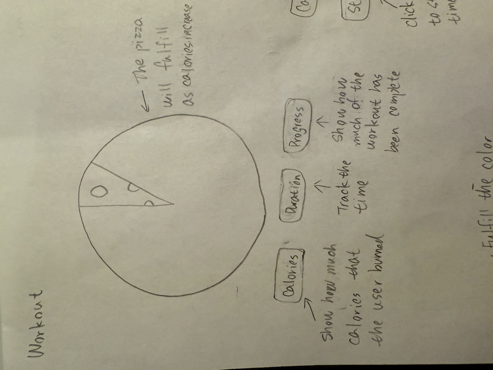
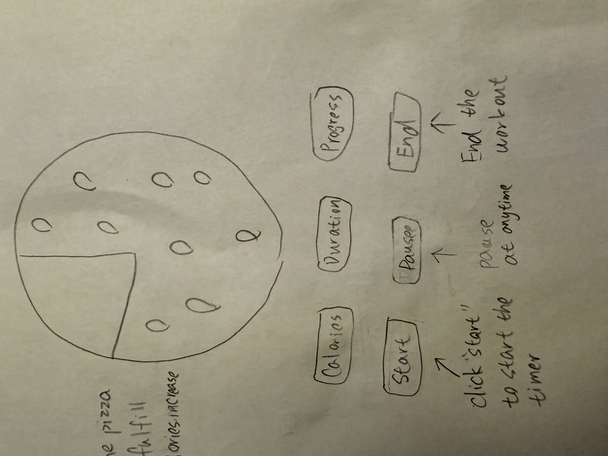

Final Clock 1
Sketch iteration documentation (paper/hand-drawn photos)


Design process: I designed this clock to help users better understand how many calories they burn during exercise. When I work out, my fitness watch usually only shows the number of calories burned, but that number feels abstract and hard to relate to real life. I often don’t know what that number actually means in terms of food. So I decided to use pizza as a reference, because it is familiar and easy to understand. As the user exercises, the pizza gradually fills up, helping users visually see their progress toward burning the equivalent calories of one pizza. At first, the clock was not interactive and only displayed information such as calories burned, exercise time, and progress. Later, I added interaction by introducing Start, Pause/Resume, and End buttons, allowing users to control the training process. I also added instructional text, such as “Click Start” and “Click Resume,” to guide users on how to use the clock, which improves accessibility and usability. In addition, I simplified the visual design by removing unnecessary elements and adjusting the layering so the toppings do not block the text.
Self-reflection / future work: I would like to improve the clock by adding more interaction. For example, users could set their own workout goals, such as how long they want to exercise or how many calories they want to burn. This would make the clock more personalized and useful for different users. I would also like to allow users to choose different types of food instead of only pizza, such as ice cream or hamburgers. This would make the visualization more flexible and relatable, since different users may prefer different food references. These improvements would enhance interaction, personalization, and overall user experience.